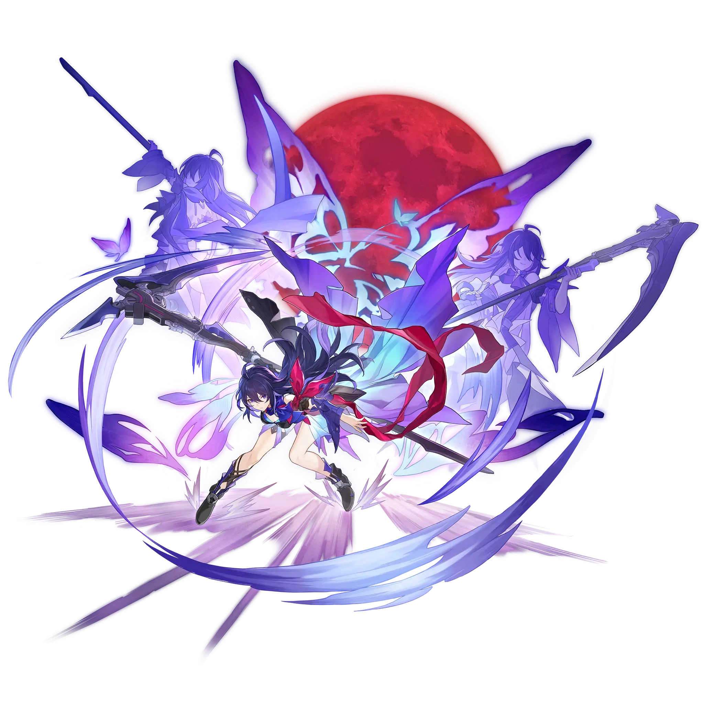

Seele
Best Seele build guide for Honkai Star Rail. See Seele's best Relics, Light Cones, teams, Eidolons, Trace priority, and how to play Seele.
🔍 Detail Skill
Semua skill aktif dan pasif beserta efeknya.
Deals Quantum DMG equal to #1[i]% of Seele's ATK to a single enemy.
Increases Seele's SPD by 25% for 3 turn(s) and deals Quantum DMG equal to #1[i]% of Seele's ATK to one designated enemy target. After an ally target attacks, if the attack target's current HP percentage is 50% or below, Seele will automatically use her Skill at that target 1 time. This Skill does not consume Skill Points or regenerate Energy. This effect can only be triggered 1 time per turn and r
Enters the Amplification state upon defeating an enemy with Basic ATK, Skill, or Ultimate, and receives an extra turn. While in the Amplification state, the DMG dealt by Seele increases by #1[i]% for 3 turn(s). Enemies defeated in the extra turn provided by "Resurgence" will not trigger another "Resurgence."
After using her Technique, Seele gains Stealth for 20 second(s). While Stealth is active, Seele cannot be detected by enemies. And when entering battle by attacking enemies, Seele will immediately enter the Amplification state and deals Quantum DMG equal to Seele's Skill DMG multiplier to random enemy target 1 time. This DMG is a guaranteed CRIT Hit.
⚔ Light Cone Terbaik
Diurutkan dari yang paling kuat. Persentase menunjukkan performa relatif terhadap pilihan terbaik.
💎 Relic Set Terbaik
Set terbaik untuk karakter ini, diurutkan berdasarkan prioritas.
📊 Stat Utama
Stat yang dicari pada tiap slot.
👥 Tim yang Direkomendasikan
Karakter yang sering dipasangkan bersama Seele.
 Sparkle
Sparkle
 Seele
Seele
 Robin Summeretto
Robin Summeretto
🔗 Lanjutkan
Build ini dirangkum dari Prydwen Institute. Starwise tidak menghitung sendiri. Angka bisa berubah setelah patch atau karakter baru rilis.